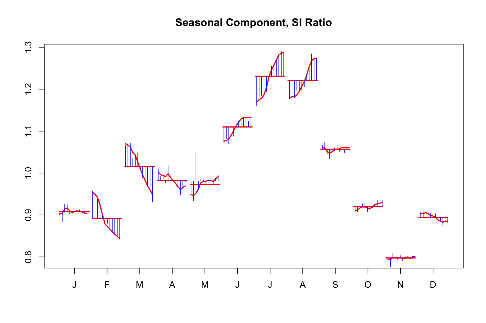

m_none <- seas(AirPassengers, transform.function = 'none')
m_log <- seas(AirPassengers, transform.function = 'log')5 Transform
You are reading an early draft of Seasonal Adjustment in R. This chapter is currently a dumping ground for ideas, and we don’t recommend reading it.
It is part of the course materials intended for Dec 21, 2022.
One of the first choices to make when modeling a time series is whether or not it needs to be transformed prior to modeling. There are two types of transformation types that typically occur within X13. The first is a prior modification. A prior modification scales each observation for known fixed effects. These effects can be well known and established such as length of a month/quarter and leap-year or more subjective such as a modification for a workers strike. We will see how this comes into the regARIMA model in the next chapter. We can think of prior modification factors as events or corrections made to your data that are fixed throughout the adjustment process. Additionally, these prior modification factors can be permanent (default) or temporary. The difference between permanent and temporary is wheither or not the effect is included back in the final seasonally adjusted series or not; permanent factors are excluded from the final seasonal adjustment while temporary are removed while calculating seasonal factors but then added back to the seasonally adjusted series.
The second type is a nonlinear transformation applied to the observations. This is typically a choice between logarithmic transform and no transformation but for modeling can be any power of the Box-Cox transformation.
5.1 Multiplicative or additive adjustment?
We seek the decompose our observed series \(Y_t\) into trend, seasonal and irregular components. \[Y_t = T_t + S_t + I_t.\] This decomposition is referred to as an additive decomposition. If a log transform is used for each component we use a multiplicative seasonal decomposition. \[Y_t = T_t \cdot S_t \cdot I_t\]
X-13 has a built in statistical test to decide between log and no transformation. This is done with an information criteria based statistical test. The choice is made by comparing the AICC value of an Airline model fit, or user specified ARIMA model, to the log transformed series and the original series. For all practical purposes this is an effective choice and can be left to the program to decide. Note, if your series has negative values it can not be log transformed and no transform is automatically selected by X-13 when automatic transformation is asked for. Other restrictions on the allowed transformations exist but these situations are rare. We can look at the results of the transformation tests by looking at specific inputs to the UDG file.
library(seasonal)
m <- seas(AirPassengers)
udg(m, c("aictest.trans.aicc.nolog", "aictest.trans.aicc.log"))
#> aictest.trans.aicc.nolog aictest.trans.aicc.log
#> 1021.1919 987.3845We see the AICC for log transformation is lower and hence selected. The summary of the seasonal object summary(m) tells us this with Transform: log displayed. The automatically selected transformation can also be found in many other places such as the HTML output with out(m) or the udg with argument name aictrans such as udg(m, "aictrans").
The choice between log and none changes the type of seasonal decomposition that will occur and hence your interpretation of the seasonal factors. With no transformation, X13 will do an additive seasonal adjustment \[Y_t = T_t + S_t + I_t.\] If a long transformation is selected, X13 will do a multiplicative adjustment \[Y_t = T_t \cdot S_t \cdot I_t.\] One major difference here is the way seasonal factors are interpreted and applied to the observed data to remove seasonality. For additive models the seasonal factor is subtracted from the original \[A_t = Y_t - S_t.\] For example, an observed value of 100 with seasonal factor of 3.2 would result in a seasonally adjusted value of \(100 - 3.2 = 96.8\). For multiplicative models the observed data is divided by the seasonal factor \[A_t = \frac{Y_t}{S_t}.\] For example, an observed value of 100 with seasonal factor of 1.08 would result in a seasonally adjusted value of \(100 / 1.08 = 92.59259\). Hence for multiplicative models values of \(S_t>1\), decrease the observed value and \(S_t < 1\) increase it. Keep this in mind with the when viewing seasonal factors such as in the function monthplot(m).
5.2 Transform options
The transform spec controls these options. Some primary options within this spec are
| Spec option | Use | Example values | default |
|---|---|---|---|
| function | specify transform | none, log, auto | none |
| data or file | specify prior adjustment factor | (1.2, 1.1, …, .99) | (1,1,…,1) |
| aicdiff | adjust tolerance of AIC test for log transform | 0.0 3.0 -4.5 | -2.0 |
Case Study: AirPassengers series
We have seen the AirPassengers already it displays all classic signs of requiring a logarithmic transform such as heteroskadasticity. Lets verify that the automatic transformation identifies this.
library(seasonal)
m <- seas(AirPassengers)
transformfunction(m)
#> [1] "log"This is also a good place to get our first look at some of the seasonal factors for an additive vs multiplicative model.
m <- seas(AirPassengers,
transform.function = "log",
x11.save = "d10")
series(m, "d10") |> head()
#> [1] 0.9093501 0.9560733 1.0670278 0.9916014 0.9377385 1.0715533
monthplot(m)m <- seas(AirPassengers,
transform.function = "none",
x11.save = "d10")
series(m, "d10") |> head()
#> [1] -15.565958 -5.116658 10.674698 -2.504963 -6.599728 12.431430
monthplot(m)
5.3 Case Study 2: More difficult decision
Consider the situaiton where you are trying to decide on transform choices for monthly retail grocery store data. The series grocery is part of the seasonalbook package.
library(seasonalbook)
plot(grocery)Visual inspection of the series shows no immediate reason to think we need to perform a log transform. There is possible seasonal hederoskadasity which could be mitigated by taking logs. Perform an X-11 adjustmnet with all of seasonal defaults.
m <- seas(grocery, x11 = "")
udg(m, c("aictest.trans.aicc.nolog", "aictest.trans.aicc.log"))
#> aictest.trans.aicc.nolog aictest.trans.aicc.log
#> 4202.960 4201.042This is interesting since the AICC for no transformation is lower than the AICC for log transform.
transformfunction(m)
#> [1] "log"The default value for transform.aicdiff is -2 meaning the program slightly prefers log transform and the difference between the AICC values must exceed 2. In this situation we see the difference between the two AICC values is -1.917597. If you were to change this option to transform.aicdiff = 0 then the program selects no transform.
m2 <- seas(grocery, x11 = "", transform.aicdiff = 2)
transformfunction(m2)
#> [1] "none"